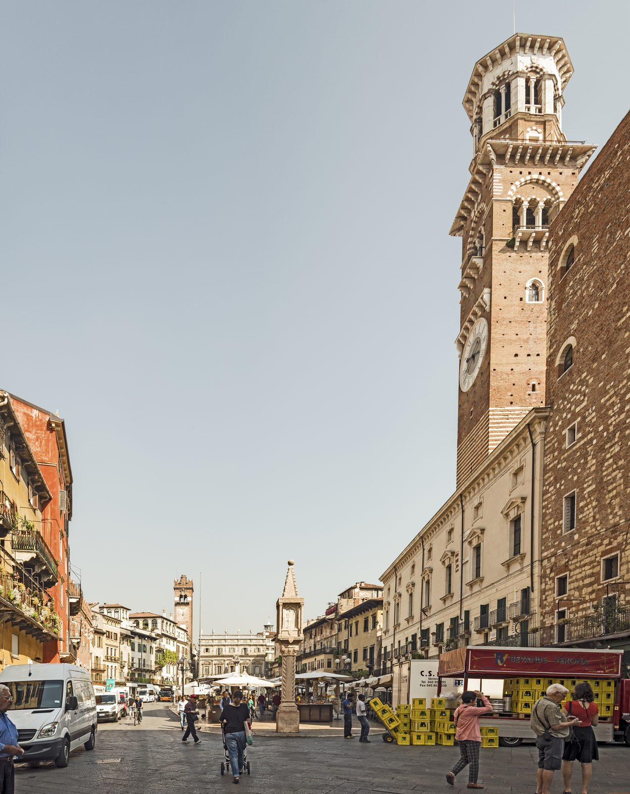

Giorno 7 di 7 · Venerdì 14 agosto · Verona → Roma
Ultima mattina a Verona e rientro a Roma
📌 In sintesi
- Check-out dall'Hotel Leopardi, bagagli in deposito per la giornata.
- Ultima mattina/primo pomeriggio a Verona: quello che è rimasto fuori finora.
- 18:22 Italo da Verona P.N. (Prima Business), arrivo a Roma Termini alle 22:13.
🕘 Itinerario della giornata
- 09:30Colazione e check-out dall'Hotel Leopardi. Chiedete di lasciare i bagagli in deposito: con un treno serale non ha senso portarseli dietro tutto il giorno.
- 10:15Castelvecchio e il Ponte Scaligero, se non li avete già visti: la fortezza dei Della Scala sull'Adige, oggi museo civico, è una delle cose rimaste fuori dai primi due giorni.
- 11:30Giardino Giusti, in alternativa o in aggiunta: giardino rinascimentale all'italiana, con un ottimo punto panoramico in cima.
- 12:30Ultimo giro in centro: una bottiglia di Amarone da portare a casa, biscotti o taralli locali, l'ultima occhiata a Piazza delle Erbe.
- 13:15Pranzo finale da Osteria alla Torre & Caffè 12, direttamente in Piazza delle Erbe — terrazzina con vista sulla piazza, per l'ultimo piatto veneto del viaggio.
- 15:00Tempo libero, con calma: oggi non c'è fretta fino al tardo pomeriggio.
- 15:30Recupero bagagli in hotel.
- 16:00Verso Verona Porta Nuova, con largo margine: agosto è alta stagione turistica e la stazione può essere affollata.
- 17:30In stazione, un ultimo caffè prima del treno.
- 18:22Italo 8967, Verona P.N. → Roma Termini, Prima Business — quattro ore comode per smaltire la giornata e magari cenare a bordo.
- 22:13Arrivo a Roma Termini. Fine del viaggio, si torna a casa in giornata: nessuna notte extra da organizzare.
🗺️ La mappa del giro
🍷 Dove mangiare

- PranzoOsteria alla Torre & Caffè 12, Piazza delle Erbe — bigoli, tortellini di Valeggio o ancora risotto all'Amarone, se non ne avete già abbastanza, con vista sulla piazza.
- Da portare a casaUna bottiglia di Amarone o Recioto da un'enoteca del centro, magari la stessa scala di vini assaggiata alla degustazione con Bruno del Giorno 6.
- In trenoLa Prima Business dell'Italo delle 18:22 ha servizio di ristorazione a bordo: la cena del rientro si può fare comodamente seduti, senza cercare nulla in stazione.
💡 Note e dritte
Perché tanto margine prima del treno. Verona Porta Nuova ad agosto, in alta stagione, può essere affollata: meglio arrivare con mezz'ora di anticipo che rischiare il minuto giusto con le valigie in mano.
Nessuna notte extra a Roma. Il treno arriva alle 22:13: si torna a casa in giornata, non serve organizzare né un albergo né un trasferimento notturno.
Castelvecchio o Giardino Giusti, non per forza entrambi. Se una delle due giornate precedenti si è già allungata su altro, bastano l'uno o l'altro: sono l'ultima voce davvero facoltativa dell'itinerario.
Se oggi non gira. Si accorcia il giro, non il margine Se la mattina parte lenta, si taglia Castelvecchio o il Giardino Giusti: l'orario di rientro in stazione alle 16:00 resta fisso, perché il treno delle 18:22 è l'unico e non è rimborsabile.